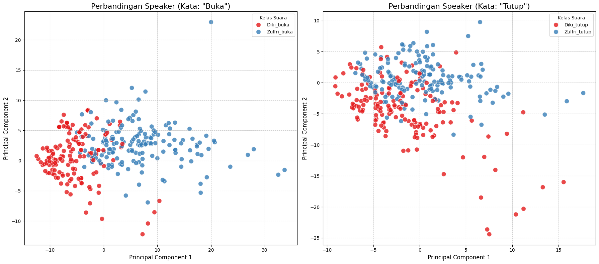

Voice Recognition#
!pip install -q numpy pandas librosa matplotlib seaborn scikit-learn tsfel joblib
[notice] A new release of pip is available: 25.2 -> 25.3
[notice] To update, run: python.exe -m pip install --upgrade pip
# ============================================================================
# BAGIAN 1: IMPORT LIBRARIES
# ============================================================================
import numpy as np
import pandas as pd
import librosa
import os
import matplotlib.pyplot as plt
import seaborn as sns
from sklearn.model_selection import train_test_split
from sklearn.preprocessing import LabelEncoder, StandardScaler
from sklearn.decomposition import PCA
from sklearn.ensemble import RandomForestClassifier
from sklearn.metrics import classification_report, confusion_matrix, accuracy_score
from sklearn.feature_selection import mutual_info_classif
import tsfel
import warnings
import joblib
warnings.filterwarnings('ignore')
from google.colab import drive
drive.mount('/content/drive')
---------------------------------------------------------------------------
ModuleNotFoundError Traceback (most recent call last)
Cell In[3], line 1
----> 1 from google.colab import drive
2 drive.mount('/content/drive')
ModuleNotFoundError: No module named 'google'
# ============================================================================
# BAGIAN 2: SETUP DIREKTORI DAN KONFIGURASI
# ============================================================================
# Folder utama dalam Google Drive
BASE_DIR = "/content/drive/MyDrive/psd"
# Definisi folder mapping manual
FOLDER_MAP = {
"buka": ("Diki", "buka"), # buka -> Diki
"tutup": ("Diki", "tutup"), # tutup -> Diki
"bukaZ": ("Zulfri", "buka"), # bukaZ -> Zulfri
"tutupZ": ("Zulfri", "tutup"), # tutupZ -> Zulfri
}
print("=" * 80)
print("SISTEM PENGENALAN SUARA - VOICE RECOGNITION")
print("=" * 80)
print(f"Folder dataset: {BASE_DIR}")
print("\nFolder mapping:")
for f, (subj, cmd) in FOLDER_MAP.items():
print(f"- {f} → Subject: {subj}, Command: {cmd}")
================================================================================
SISTEM PENGENALAN SUARA - VOICE RECOGNITION
================================================================================
Folder dataset: /content/drive/MyDrive/psd
Folder mapping:
- buka → Subject: Diki, Command: buka
- tutup → Subject: Diki, Command: tutup
- bukaZ → Subject: Zulfri, Command: buka
- tutupZ → Subject: Zulfri, Command: tutup
# ============================================================================
# BAGIAN 3: FUNGSI EKSTRAKSI FITUR MENGGUNAKAN TSFEL
# ============================================================================
def extract_features_tsfel(audio_path, sr=22050):
"""
Ekstraksi fitur audio menggunakan TSFEL
Returns: 156 fitur (statistical, temporal, spectral)
"""
try:
# Load audio
y, sr = librosa.load(audio_path, sr=sr)
# Konfigurasi TSFEL untuk ekstraksi semua fitur
cfg = tsfel.get_features_by_domain()
# Ekstraksi fitur
features = tsfel.time_series_features_extractor(
cfg,
y,
fs=sr,
verbose=0
)
return features.values.flatten()
except Exception as e:
print(f"Error processing {audio_path}: {str(e)}")
return None
Fungsi Augmentasi Data#
def add_noise(audio, noise_factor=0.005):
"""Tambahkan white noise ke audio"""
noise = np.random.randn(len(audio))
augmented_audio = audio + noise_factor * noise
return augmented_audio
def time_stretch(audio, rate=1.0):
"""Ubah kecepatan audio tanpa mengubah pitch"""
return librosa.effects.time_stretch(audio, rate=rate)
def pitch_shift(audio, sr, n_steps=0):
"""Ubah pitch audio"""
return librosa.effects.pitch_shift(audio, sr=sr, n_steps=n_steps)
def change_volume(audio, factor=1.0):
"""Ubah volume audio"""
return audio * factor
def time_shift(audio, shift_max=0.2):
"""Shift audio dalam waktu"""
shift = np.random.randint(int(len(audio) * shift_max))
direction = np.random.choice(['right', 'left'])
if direction == 'right':
return np.pad(audio, (shift, 0), mode='constant')[:-shift]
else:
return np.pad(audio, (0, shift), mode='constant')[shift:]
def augment_audio(audio, sr, augmentation_type='noise'):
"""
Augmentasi audio dengan berbagai metode
Parameters:
- audio: numpy array audio
- sr: sample rate
- augmentation_type: 'noise', 'pitch_up', 'pitch_down', 'speed_up', 'speed_down', 'louder', 'softer', 'shift'
"""
if augmentation_type == 'noise':
return add_noise(audio, noise_factor=0.005)
elif augmentation_type == 'pitch_up':
return pitch_shift(audio, sr, n_steps=2)
elif augmentation_type == 'pitch_down':
return pitch_shift(audio, sr, n_steps=-2)
elif augmentation_type == 'speed_up':
return time_stretch(audio, rate=1.1)
elif augmentation_type == 'speed_down':
return time_stretch(audio, rate=0.9)
elif augmentation_type == 'louder':
return change_volume(audio, factor=1.2)
elif augmentation_type == 'softer':
return change_volume(audio, factor=0.8)
elif augmentation_type == 'shift':
return time_shift(audio, shift_max=0.2)
else:
return audio
LOAD DATA DAN EKSTRAKSI FITUR (STRUKTUR PSD)#
# ============================================================================
# BAGIAN 4: LOAD DATA DAN EKSTRAKSI FITUR (STRUKTUR PSD)
# ============================================================================
print("\n" + "=" * 80)
print("EKSTRAKSI FITUR DARI AUDIO (DENGAN AUGMENTASI)")
print("=" * 80)
# Konfigurasi augmentasi
APPLY_AUGMENTATION = True # Set True untuk menggunakan augmentasi
AUGMENTATION_TYPES = ['noise', 'pitch_up', 'pitch_down'] # Pilih jenis augmentasi
print(f"\nAugmentasi: {'AKTIF' if APPLY_AUGMENTATION else 'TIDAK AKTIF'}")
if APPLY_AUGMENTATION:
print(f"Jenis augmentasi: {AUGMENTATION_TYPES}")
print(f"Multiplication factor: {len(AUGMENTATION_TYPES) + 1}x (original + {len(AUGMENTATION_TYPES)} augmentasi)")
data = []
labels_command = []
labels_subject = []
file_paths = []
augmentation_info = [] # Untuk tracking augmentasi
# Loop untuk setiap entri di FOLDER_MAP
for folder_key, (subject_label, command_label) in FOLDER_MAP.items():
folder_path = os.path.join(BASE_DIR, folder_key)
if not os.path.exists(folder_path):
print(f"WARNING: Folder tidak ditemukan: {folder_path}")
continue
audio_files = [f for f in os.listdir(folder_path) if f.endswith(('.wav', '.mp3', '.flac'))]
print(f"\nMemproses: {subject_label} - {command_label}")
print(f"Jumlah file original: {len(audio_files)}")
original_count = 0
augmented_count = 0
for audio_file in audio_files:
audio_path = os.path.join(folder_path, audio_file)
# Load audio untuk augmentasi
try:
y, sr = librosa.load(audio_path, sr=22050)
except Exception as e:
print(f"Error loading {audio_file}: {str(e)}")
continue
# 1. Ekstraksi fitur dari ORIGINAL audio
features = extract_features_tsfel(audio_path)
if features is not None:
data.append(features)
labels_command.append(command_label)
labels_subject.append(subject_label)
file_paths.append(audio_path)
augmentation_info.append('original')
original_count += 1
# 2. Ekstraksi fitur dari AUGMENTED audio (jika diaktifkan)
if APPLY_AUGMENTATION:
for aug_type in AUGMENTATION_TYPES:
try:
# Augmentasi audio
augmented_audio = augment_audio(y, sr, aug_type)
# Ekstraksi fitur dari augmented audio
cfg = tsfel.get_features_by_domain()
features_aug = tsfel.time_series_features_extractor(
cfg,
augmented_audio,
fs=sr,
verbose=0
)
features_aug = features_aug.values.flatten()
if features_aug is not None:
data.append(features_aug)
labels_command.append(command_label)
labels_subject.append(subject_label)
file_paths.append(f"{audio_path}_{aug_type}")
augmentation_info.append(aug_type)
augmented_count += 1
except Exception as e:
print(f"Error augmenting {audio_file} with {aug_type}: {str(e)}")
print(f" Original: {original_count}")
if APPLY_AUGMENTATION:
print(f" Augmented: {augmented_count}")
print(f" Total: {original_count + augmented_count}")
# Konversi ke DataFrame
print("\n" + "=" * 80)
print("MEMBUAT DATAFRAME")
print("=" * 80)
X = np.array(data)
df_features = pd.DataFrame(X)
# Multi-label encoding
df_features['command'] = labels_command
df_features['subject'] = labels_subject
# Membuat label gabungan untuk multi-label classification
df_features['multi_label'] = df_features['subject'] + '_' + df_features['command']
print(f"\nTotal sampel berhasil diproses: {len(df_features)}")
print(f"Total fitur: {X.shape[1]}")
print(f"\nDistribusi data:")
print(df_features['multi_label'].value_counts())
================================================================================
EKSTRAKSI FITUR DARI AUDIO (DENGAN AUGMENTASI)
================================================================================
Augmentasi: AKTIF
Jenis augmentasi: ['noise', 'pitch_up', 'pitch_down']
Multiplication factor: 4x (original + 3 augmentasi)
Memproses: Diki - buka
Jumlah file original: 50
Original: 50
Augmented: 150
Total: 200
Memproses: Diki - tutup
Jumlah file original: 50
Original: 50
Augmented: 150
Total: 200
Memproses: Zulfri - buka
Jumlah file original: 50
Original: 50
Augmented: 150
Total: 200
Memproses: Zulfri - tutup
Jumlah file original: 50
Original: 50
Augmented: 150
Total: 200
================================================================================
MEMBUAT DATAFRAME
================================================================================
Total sampel berhasil diproses: 800
Total fitur: 156
Distribusi data:
multi_label
Diki_buka 200
Diki_tutup 200
Zulfri_buka 200
Zulfri_tutup 200
Name: count, dtype: int64
VISUALISASI FITUR#
print("\n" + "=" * 80)
print("STATISTIK FITUR")
print("=" * 80)
# Tampilkan statistik fitur
feature_cols = [col for col in df_features.columns if col not in ['command', 'subject', 'multi_label']]
print(f"\nJumlah fitur numerik: {len(feature_cols)}")
print("\nStatistik deskriptif (5 fitur pertama):")
print(df_features[feature_cols[:5]].describe())
# Visualisasi distribusi
fig, axes = plt.subplots(2, 2, figsize=(15, 10))
fig.suptitle('Visualisasi Data', fontsize=16)
# Plot 1: Distribusi label command
axes[0, 0].bar(df_features['command'].value_counts().index,
df_features['command'].value_counts().values)
axes[0, 0].set_title('Distribusi Command (Buka/Tutup)')
axes[0, 0].set_xlabel('Command')
axes[0, 0].set_ylabel('Jumlah')
# Plot 2: Distribusi label subject
axes[0, 1].bar(df_features['subject'].value_counts().index,
df_features['subject'].value_counts().values)
axes[0, 1].set_title('Distribusi Subject (Diki/Zulfri)')
axes[0, 1].set_xlabel('Subject')
axes[0, 1].set_ylabel('Jumlah')
# Plot 3: Distribusi multi-label
multi_label_counts = df_features['multi_label'].value_counts()
axes[1, 0].bar(range(len(multi_label_counts)), multi_label_counts.values)
axes[1, 0].set_xticks(range(len(multi_label_counts)))
axes[1, 0].set_xticklabels(multi_label_counts.index, rotation=45)
axes[1, 0].set_title('Distribusi Multi-Label')
axes[1, 0].set_ylabel('Jumlah')
# Plot 4: Heatmap korelasi (sample 10 fitur)
sample_features = df_features[feature_cols[:10]]
corr_matrix = sample_features.corr()
sns.heatmap(corr_matrix, ax=axes[1, 1], cmap='coolwarm', center=0)
axes[1, 1].set_title('Korelasi Antar Fitur (Sample 10 Fitur)')
plt.tight_layout()
plt.show()
================================================================================
STATISTIK FITUR
================================================================================
Jumlah fitur numerik: 156
Statistik deskriptif (5 fitur pertama):
0 1 2 3 4
count 800.000000 800.000000 800.000000 800.000000 800.000000
mean 309.137055 0.068591 10.285000 231.718295 0.843708
std 258.918933 0.031374 2.714864 205.922386 0.278544
min 9.146526 0.016425 5.000000 5.641424 0.297220
25% 130.392833 0.045540 8.000000 95.135863 0.669377
50% 232.413633 0.062756 11.000000 171.549764 0.796051
75% 396.252924 0.084306 12.000000 295.973673 0.966493
max 1472.542786 0.196017 25.000000 1259.017847 1.634988

PREPROCESSING#
# ============================================================================
# BAGIAN 6: PREPROCESSING
# ============================================================================
print("\n" + "=" * 80)
print("PREPROCESSING DATA")
print("=" * 80)
# Encode labels
le_multi = LabelEncoder()
y_multi = le_multi.fit_transform(df_features['multi_label'])
# Pisahkan fitur dan label
X = df_features[feature_cols].values
# Handle missing values
X = np.nan_to_num(X, nan=0.0, posinf=0.0, neginf=0.0)
print(f"\nShape X: {X.shape}")
print(f"Shape y: {y_multi.shape}")
print(f"\nKelas multi-label: {le_multi.classes_}")
# Split data
X_train, X_test, y_train, y_test = train_test_split(
X, y_multi, test_size=0.2, random_state=42, stratify=y_multi
)
print(f"\nData training: {X_train.shape}")
print(f"Data testing: {X_test.shape}")
# Scaling
scaler = StandardScaler()
X_train_scaled = scaler.fit_transform(X_train)
X_test_scaled = scaler.transform(X_test)
================================================================================
PREPROCESSING DATA
================================================================================
Shape X: (800, 156)
Shape y: (800,)
Kelas multi-label: ['Diki_buka' 'Diki_tutup' 'Zulfri_buka' 'Zulfri_tutup']
Data training: (640, 156)
Data testing: (160, 156)
EXPERIMENT 1 - MENGGUNAKAN SEMUA FITUR#
# ============================================================================
# BAGIAN 7: EXPERIMENT 1 - MENGGUNAKAN SEMUA FITUR
# ============================================================================
print("\n" + "=" * 80)
print("EXPERIMENT 1: MENGGUNAKAN SEMUA FITUR (156 Fitur)")
print("=" * 80)
# Model dengan semua fitur
rf_all = RandomForestClassifier(n_estimators=100, random_state=42, n_jobs=-1)
rf_all.fit(X_train_scaled, y_train)
# Prediksi
y_pred_all = rf_all.predict(X_test_scaled)
# Evaluasi
acc_all = accuracy_score(y_test, y_pred_all)
print(f"\nAkurasi dengan SEMUA FITUR: {acc_all*100:.2f}%")
print("\nClassification Report (Semua Fitur):")
print(classification_report(y_test, y_pred_all, target_names=le_multi.classes_))
# Confusion Matrix
cm_all = confusion_matrix(y_test, y_pred_all)
plt.figure(figsize=(8, 6))
sns.heatmap(cm_all, annot=True, fmt='d', cmap='Blues',
xticklabels=le_multi.classes_,
yticklabels=le_multi.classes_)
plt.title(f'Confusion Matrix - Semua Fitur\nAkurasi: {acc_all*100:.2f}%')
plt.ylabel('True Label')
plt.xlabel('Predicted Label')
plt.tight_layout()
plt.show()
================================================================================
EXPERIMENT 1: MENGGUNAKAN SEMUA FITUR (156 Fitur)
================================================================================
Akurasi dengan SEMUA FITUR: 95.00%
Classification Report (Semua Fitur):
precision recall f1-score support
Diki_buka 0.88 0.95 0.92 40
Diki_tutup 0.95 0.88 0.91 40
Zulfri_buka 1.00 0.97 0.99 40
Zulfri_tutup 0.98 1.00 0.99 40
accuracy 0.95 160
macro avg 0.95 0.95 0.95 160
weighted avg 0.95 0.95 0.95 160

SELEKSI FITUR MENGGUNAKAN INFORMATION GAIN#
# ============================================================================
# BAGIAN 8: SELEKSI FITUR MENGGUNAKAN INFORMATION GAIN
# ============================================================================
print("\n" + "=" * 80)
print("SELEKSI FITUR MENGGUNAKAN INFORMATION GAIN")
print("=" * 80)
# Hitung Information Gain (Mutual Information)
mi_scores = mutual_info_classif(X_train_scaled, y_train, random_state=42)
# Buat DataFrame untuk analisis
feature_importance_df = pd.DataFrame({
'feature_idx': range(len(mi_scores)),
'mi_score': mi_scores
}).sort_values('mi_score', ascending=False)
print("\nTop 20 Fitur berdasarkan Information Gain:")
print(feature_importance_df.head(20))
# Visualisasi Information Gain
plt.figure(figsize=(12, 6))
plt.bar(range(len(mi_scores)), sorted(mi_scores, reverse=True))
plt.xlabel('Feature Index (Sorted by MI Score)')
plt.ylabel('Mutual Information Score')
plt.title('Information Gain untuk Setiap Fitur')
plt.axhline(y=np.mean(mi_scores), color='r', linestyle='--', label='Mean MI Score')
plt.legend()
plt.tight_layout()
plt.savefig('information_gain.png', dpi=300, bbox_inches='tight')
plt.show()
# Pilih fitur terbaik (threshold: mean MI score)
threshold = np.mean(mi_scores)
selected_features_idx = feature_importance_df[feature_importance_df['mi_score'] > threshold]['feature_idx'].values
print(f"\nJumlah fitur terpilih (MI > mean): {len(selected_features_idx)}")
print(f"Threshold MI Score: {threshold:.4f}")
================================================================================
SELEKSI FITUR MENGGUNAKAN INFORMATION GAIN
================================================================================
Top 20 Fitur berdasarkan Information Gain:
feature_idx mi_score
20 20 0.763014
68 68 0.714301
87 87 0.713771
66 66 0.674721
84 84 0.641517
111 111 0.625981
136 136 0.613109
96 96 0.601350
110 110 0.595423
141 141 0.594754
131 131 0.594754
150 150 0.593983
86 86 0.587105
95 95 0.578815
97 97 0.574942
74 74 0.562317
108 108 0.561804
112 112 0.555103
149 149 0.552300
113 113 0.551738
Jumlah fitur terpilih (MI > mean): 78
Threshold MI Score: 0.3625
EXPERIMENT 2 - MENGGUNAKAN FITUR TERSELEKSI#
# ============================================================================
# BAGIAN 9: EXPERIMENT 2 - MENGGUNAKAN FITUR TERSELEKSI
# ============================================================================
print("\n" + "=" * 80)
print("EXPERIMENT 2: MENGGUNAKAN FITUR TERSELEKSI")
print("=" * 80)
# Filter fitur
X_train_selected = X_train_scaled[:, selected_features_idx]
X_test_selected = X_test_scaled[:, selected_features_idx]
print(f"\nShape data setelah seleksi: {X_train_selected.shape}")
# Model dengan fitur terseleksi
rf_selected = RandomForestClassifier(n_estimators=100, random_state=42, n_jobs=-1)
rf_selected.fit(X_train_selected, y_train)
# Prediksi
y_pred_selected = rf_selected.predict(X_test_selected)
# Evaluasi
acc_selected = accuracy_score(y_test, y_pred_selected)
print(f"\nAkurasi dengan FITUR TERSELEKSI: {acc_selected*100:.2f}%")
print("\nClassification Report (Fitur Terseleksi):")
print(classification_report(y_test, y_pred_selected, target_names=le_multi.classes_))
# Confusion Matrix
cm_selected = confusion_matrix(y_test, y_pred_selected)
plt.figure(figsize=(8, 6))
sns.heatmap(cm_selected, annot=True, fmt='d', cmap='Greens',
xticklabels=le_multi.classes_,
yticklabels=le_multi.classes_)
plt.title(f'Confusion Matrix - Fitur Terseleksi\nAkurasi: {acc_selected*100:.2f}%')
plt.ylabel('True Label')
plt.xlabel('Predicted Label')
plt.tight_layout()
plt.show()
================================================================================
EXPERIMENT 2: MENGGUNAKAN FITUR TERSELEKSI
================================================================================
Shape data setelah seleksi: (640, 78)
Akurasi dengan FITUR TERSELEKSI: 94.38%
Classification Report (Fitur Terseleksi):
precision recall f1-score support
Diki_buka 0.92 0.90 0.91 40
Diki_tutup 0.90 0.93 0.91 40
Zulfri_buka 1.00 0.95 0.97 40
Zulfri_tutup 0.95 1.00 0.98 40
accuracy 0.94 160
macro avg 0.94 0.94 0.94 160
weighted avg 0.94 0.94 0.94 160

# ============================================================================
# BAGIAN 10: PCA TRANSFORMATION (100 COMPONENTS)
# ============================================================================
print("\n" + "=" * 80)
print("PCA TRANSFORMATION (100 Components)")
print("=" * 80)
# Terapkan PCA pada semua fitur (156 fitur)
pca = PCA(n_components=100, random_state=42)
X_train_pca = pca.fit_transform(X_train_scaled)
X_test_pca = pca.transform(X_test_scaled)
# Membuat DataFrame PCA 2D untuk visualisasi
X_train_pca_2d = X_train_pca[:, :2] # Ambil PC1 dan PC2
df_pca = pd.DataFrame({
"PC1": X_train_pca_2d[:, 0],
"PC2": X_train_pca_2d[:, 1],
"nama_label": le_multi.inverse_transform(y_train) # Use inverse_transform to get original labels from encoded y_train
})
print(f"\nShape setelah PCA: {X_train_pca.shape}")
print(f"Total variance explained: {pca.explained_variance_ratio_.sum()*100:.2f}%")
# Visualisasi explained variance
plt.figure(figsize=(12, 5))
plt.subplot(1, 2, 1)
plt.plot(np.cumsum(pca.explained_variance_ratio_))
plt.xlabel('Number of Components')
plt.ylabel('Cumulative Explained Variance')
plt.title('PCA - Cumulative Explained Variance')
plt.grid(True)
plt.subplot(1, 2, 2)
plt.bar(range(1, 21), pca.explained_variance_ratio_[:20])
plt.xlabel('Principal Component')
plt.ylabel('Variance Ratio')
plt.title('PCA - Variance Explained (Top 20 Components)')
plt.xticks(range(1, 21))
plt.tight_layout()
# plt.savefig('pca_analysis.png', dpi=300, bbox_inches='tight')
plt.show()
# Model dengan PCA
rf_pca = RandomForestClassifier(n_estimators=100, random_state=42, n_jobs=-1)
rf_pca.fit(X_train_pca, y_train)
# Prediksi
y_pred_pca = rf_pca.predict(X_test_pca)
# Evaluasi
acc_pca = accuracy_score(y_test, y_pred_pca)
print(f"\nAkurasi dengan PCA (100 components): {acc_pca*100:.2f}%")
print("\nClassification Report (PCA):")
print(classification_report(y_test, y_pred_pca, target_names=le_multi.classes_))
================================================================================
PCA TRANSFORMATION (100 Components)
================================================================================
Shape setelah PCA: (640, 100)
Total variance explained: 99.99%

Akurasi dengan PCA (100 components): 94.38%
Classification Report (PCA):
precision recall f1-score support
Diki_buka 0.97 0.88 0.92 40
Diki_tutup 0.88 0.93 0.90 40
Zulfri_buka 1.00 0.97 0.99 40
Zulfri_tutup 0.93 1.00 0.96 40
accuracy 0.94 160
macro avg 0.95 0.94 0.94 160
weighted avg 0.95 0.94 0.94 160
# ----------------------------------------------------------------------
# VISUALISASI PERBANDINGAN SPEAKER (BUKA vs TUTUP)
# ----------------------------------------------------------------------
# Atur figur agar memiliki 2 subplot berdampingan
plt.figure(figsize=(18, 8))
# --- PLOT 1: Perbandingan untuk kata "Buka" ---
plt.subplot(1, 2, 1) # 1 baris, 2 kolom, plot ke-1
# Filter data: hanya ambil label 'Diki_buka' dan 'Zulfri_buka'
data_buka = df_pca[df_pca['nama_label'].isin(['Diki_buka', 'Zulfri_buka'])]
sns.scatterplot(
data=data_buka,
x='PC1',
y='PC2',
hue='nama_label',
palette='Set1', # Gunakan palet warna yang jelas
s=100,
alpha=0.8
)
plt.title('Perbandingan Speaker (Kata: "Buka")', fontsize=16)
plt.xlabel('Principal Component 1', fontsize=12)
plt.ylabel('Principal Component 2', fontsize=12)
plt.grid(True, linestyle='--', alpha=0.6)
plt.legend(title='Kelas Suara')
# --- PLOT 2: Perbandingan untuk kata "Tutup" ---
plt.subplot(1, 2, 2) # 1 baris, 2 kolom, plot ke-2
# Filter data: hanya ambil label 'Diki_tutup' dan 'Zulfri_tutup'
data_tutup = df_pca[df_pca['nama_label'].isin(['Diki_tutup', 'Zulfri_tutup'])]
sns.scatterplot(
data=data_tutup,
x='PC1',
y='PC2',
hue='nama_label',
palette='Set1', # Gunakan palet yang sama
s=100,
alpha=0.8
)
plt.title('Perbandingan Speaker (Kata: "Tutup")', fontsize=16)
plt.xlabel('Principal Component 1', fontsize=12)
plt.ylabel('Principal Component 2', fontsize=12)
plt.grid(True, linestyle='--', alpha=0.6)
plt.legend(title='Kelas Suara')
# Tampilkan kedua plot
plt.tight_layout()
plt.show()

PERBANDINGAN HASIL EXPERIMENT#
# ============================================================================
# BAGIAN 11: PERBANDINGAN HASIL EXPERIMENT
# ============================================================================
print("\n" + "=" * 80)
print("PERBANDINGAN HASIL SEMUA EXPERIMENT")
print("=" * 80)
results = {
'Method': ['Semua Fitur (156)', 'Seleksi Fitur (IG)', 'PCA (100 comp)'],
'Num Features': [X.shape[1], len(selected_features_idx), 100],
'Accuracy (%)': [acc_all*100, acc_selected*100, acc_pca*100]
}
df_results = pd.DataFrame(results)
print("\n", df_results.to_string(index=False))
# Visualisasi perbandingan
fig, axes = plt.subplots(1, 2, figsize=(14, 5))
# Plot 1: Akurasi
axes[0].bar(df_results['Method'], df_results['Accuracy (%)'],
color=['#3498db', '#2ecc71', '#e74c3c'])
axes[0].set_ylabel('Akurasi (%)')
axes[0].set_title('Perbandingan Akurasi')
axes[0].set_ylim([0, 100])
for i, v in enumerate(df_results['Accuracy (%)']):
axes[0].text(i, v + 1, f'{v:.2f}%', ha='center', va='bottom', fontweight='bold')
# Plot 2: Jumlah Fitur
axes[1].bar(df_results['Method'], df_results['Num Features'],
color=['#3498db', '#2ecc71', '#e74c3c'])
axes[1].set_ylabel('Jumlah Fitur')
axes[1].set_title('Perbandingan Jumlah Fitur')
for i, v in enumerate(df_results['Num Features']):
axes[1].text(i, v + 2, str(v), ha='center', va='bottom', fontweight='bold')
plt.tight_layout()
plt.show()
================================================================================
PERBANDINGAN HASIL SEMUA EXPERIMENT
================================================================================
Method Num Features Accuracy (%)
Semua Fitur (156) 156 95.000
Seleksi Fitur (IG) 78 94.375
PCA (100 comp) 100 94.375

SAVE MODEL DAN PREPROCESSING OBJECTS#
# ============================================================================
# BAGIAN 12: SAVE MODEL DAN PREPROCESSING OBJECTS
# ============================================================================
print("\n" + "=" * 80)
print("MENYIMPAN MODEL DAN OBJECTS")
print("=" * 80)
# Simpan model terbaik (pilih yang akurasi tertinggi)
best_models = {
'all_features': (rf_all, acc_all, 'semua_fitur'),
'selected_features': (rf_selected, acc_selected, 'seleksi_fitur'),
'pca': (rf_pca, acc_pca, 'pca')
}
best_method = max(best_models.items(), key=lambda x: x[1][1])
best_model_name = best_method[0]
best_model, best_acc, best_desc = best_method[1]
print(f"\nModel terbaik: {best_desc}")
print(f"Akurasi: {best_acc*100:.2f}%")
# Save objects
joblib.dump(best_model, 'model_best.pkl')
joblib.dump(scaler, 'scaler.pkl')
joblib.dump(le_multi, 'label_encoder.pkl')
joblib.dump(selected_features_idx, 'selected_features.pkl')
joblib.dump(pca, 'pca.pkl')
# Save info model
model_info = {
'best_method': best_model_name,
'accuracy': best_acc,
'num_features': len(selected_features_idx) if best_model_name == 'selected_features' else (100 if best_model_name == 'pca' else X.shape[1]),
'classes': le_multi.classes_.tolist()
}
import json
with open('model_info.json', 'w') as f:
json.dump(model_info, f, indent=4)
print("\nFile yang disimpan:")
print("- model_best.pkl")
print("- scaler.pkl")
print("- label_encoder.pkl")
print("- selected_features.pkl")
print("- pca.pkl")
print("- model_info.json")
================================================================================
MENYIMPAN MODEL DAN OBJECTS
================================================================================
Model terbaik: semua_fitur
Akurasi: 95.00%
File yang disimpan:
- model_best.pkl
- scaler.pkl
- label_encoder.pkl
- selected_features.pkl
- pca.pkl
- model_info.json
# ============================================================================
# BAGIAN 13: FUNGSI PREDIKSI UNTUK AUDIO BARU
# ============================================================================
def predict_new_audio(audio_path, method='best'):
"""
Fungsi untuk memprediksi audio baru
Parameters:
- audio_path: path ke file audio
- method: 'all_features', 'selected_features', atau 'pca'
"""
# Load objects
model = joblib.load('model_best.pkl')
scaler = joblib.load('scaler.pkl')
le = joblib.load('label_encoder.pkl')
# Ekstraksi fitur
features = extract_features_tsfel(audio_path)
if features is None:
return None
# Reshape dan scale
features = features.reshape(1, -1)
features = np.nan_to_num(features, nan=0.0, posinf=0.0, neginf=0.0)
features_scaled = scaler.transform(features)
# Load model info untuk menentukan method
with open('model_info.json', 'r') as f:
model_info = json.load(f)
best_method = model_info['best_method']
# Terapkan transformasi sesuai method
if best_method == 'selected_features':
selected_idx = joblib.load('selected_features.pkl')
features_final = features_scaled[:, selected_idx]
elif best_method == 'pca':
pca_model = joblib.load('pca.pkl')
features_final = pca_model.transform(features_scaled)
else:
features_final = features_scaled
# Prediksi
prediction = model.predict(features_final)
prediction_proba = model.predict_proba(features_final)
# Decode label
predicted_label = le.inverse_transform(prediction)[0]
# Parse label
subject, command = predicted_label.split('_')
result = {
'subject': subject,
'command': command,
'full_label': predicted_label,
'confidence': np.max(prediction_proba) * 100,
'all_probabilities': {
le.classes_[i]: prediction_proba[0][i] * 100
for i in range(len(le.classes_))
}
}
return result
# Test fungsi prediksi (contoh)
print("\n" + "=" * 80)
print("TEST FUNGSI PREDIKSI")
print("=" * 80)
print("\nFungsi predict_new_audio() siap digunakan!")
print("\nContoh penggunaan:")
print("result = predict_new_audio('path/to/audio.wav')")
print("print(f\"Subject: {result['subject']}\")")
print("print(f\"Command: {result['command']}\")")
print("print(f\"Confidence: {result['confidence']:.2f}%\")")
print("\n" + "=" * 80)
print("PROSES SELESAI!")
print("=" * 80)
print("\nSilakan lanjutkan ke deployment Streamlit dengan file yang sudah disimpan.")
================================================================================
TEST FUNGSI PREDIKSI
================================================================================
Fungsi predict_new_audio() siap digunakan!
Contoh penggunaan:
result = predict_new_audio('path/to/audio.wav')
print(f"Subject: {result['subject']}")
print(f"Command: {result['command']}")
print(f"Confidence: {result['confidence']:.2f}%")
================================================================================
PROSES SELESAI!
================================================================================
Silakan lanjutkan ke deployment Streamlit dengan file yang sudah disimpan.